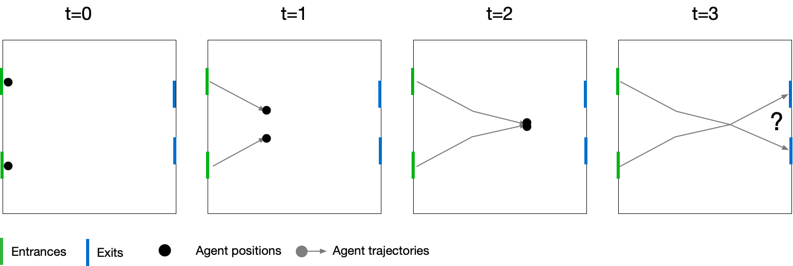
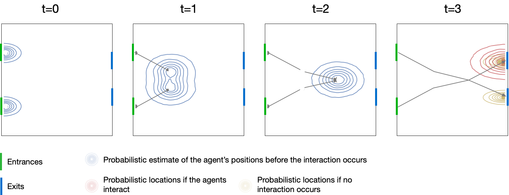
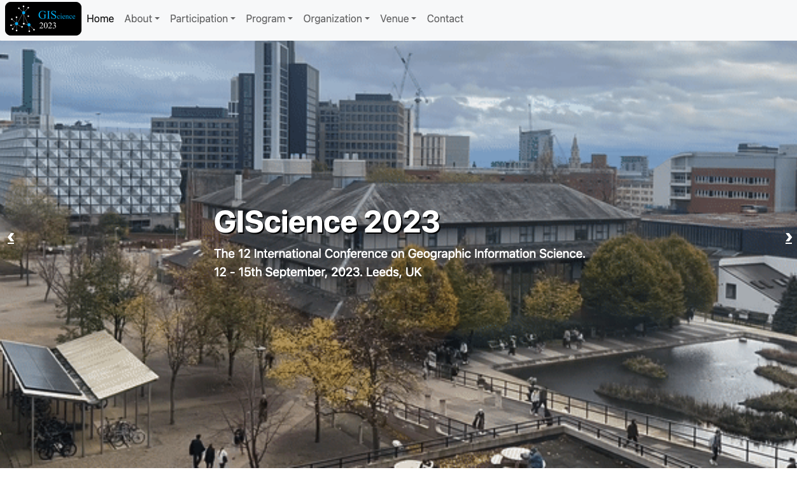

GISRUK 2023. University of Glasgow, 19-21 April 2023
Virtual Mirrors or Smoke and Mirrors?
Can Urban Digital Twins Make Cities Better?
Nick Malleson, University of Leeds, UK
Slides available at:
https://urban-analytics.github.io/dust/presentations.html
Critical (urban?) social problems
Children in the most deprived neighbourhoods have 10 years shorter life expectancy than those born in affluent neighbourhoods.
The use of food banks has increase by 81% in five years
Rape has effectively been decriminalised (in 2021 only 5% of recorded rapes resulted in a charge).
A third of English children leaving primary school are overweight or living with obesity
Can urban digital twins help?


Presentation Outline
1. Digital twins (of urban systems)
2. The role of agent-based modelling
3. Challenges for Urban Digital Twins
4. Progress towards Urban DTs
Data, model synthesis, emulation, real-time modelling
5. Are they worth it?
Acknowledgements
Josie McCulloch, Patricia Ternes, Robert Clay, Dan Tang,
Molly Asher, Yannick Oswald, Keiran Suchak
Jiaqi Ge, Jonathan Ward, Minh Kieu, Alison Heppenstall
Digital twins
(of urban systems)
What are Digital Twins?
A synthesis of computer models, sensor networks, visualisations, etc., that mirror a real-world system, product or process

"Precise, virtual copies of machines or systems"
Examples:
Machines / products;
Manufacturing (factories);
Health / hospitals;
Smart Cities (e.g. Singapore, Victoria, Bradford);
... many others ...
Urban Digital Twins
Recent significant interest from government (and industry / academia)
National Digital Twin programme
e.g. Gemini Principles
Connected Urban Twins (Hamburg, Leipzig, Munich)
Singapore
Glasgow (University campus)
But lots of 3D models. Few twins

Urban Digital Twins
Potential (?)
Improved (public) transport & mobility
Rapid, evidence-based responses to evolving urban state (emergencies, organised events, etc.)
More effective use of front-line services
Agile, responsive policy making
What might an (urban) digital twin look like?
The Role of Agent-Based Modelling
Agent-Based Modelling
Systems are driven by individuals
(cars, people, ants, trees, whatever)
Individual-level modelling
Rather than controlling from the top, try to represent the individuals
Autonomous, interacting agents
Situated in a virtual environment

Attribution: JBrew (CC BY-SA 2.0).
Why ABM?
Emergence
"The whole is greater than the sum of its parts." (Aristotle?)
Simple rules → complex outcomes
E.g. who plans the air-conditioning in termite mounds?
Hard to anticipate, and cannot be deduced from analysis of an individual
ABM uses simulation to (try to) understand how macro-level patterns emerge from micro-level behaviours
Why ABM?
Individual-level Representations of Theory
Implement individual behavioural rules into agents

Representing Space
Rich micro-level environments
Natural Description of a System
Describe the entities directly, rather than using aggregate equations

Why ABM?
History of the Model Evolution
Rather than returning a single result, the model evolves
The evolution itself can be interesting
Analyse why certain events occurred
ABM Example
Awareness space test
Agent-Based Modelling - Difficulties

(actually he played with his trains...)
Tendency towards minimal behavioural complexity
Stochasticity
Computationally expensive (not amenable to optimisation)
Complicated agent decisions, lots of decisions, multiple model runs
Modelling "soft" human factors
Need detailed, high-resolution, individual-level data
Individual-level data
The Role of Agent-Based Modelling in Urban DTs?
ABMs are ideal in some circumstances
Interactions are important
Individual heterogeneity
Lots of individuals (but not too many...)
But the wrong tool in other circumstances
If a simpler model works - use that!
(Spatial interaction models, (GW) regression, dynamic microsimulation, etc...)
Most useful role in a DT as part of a suite of models?
Challenges for Urban Digital Twins
Challenges
Simulating Complex Urban Systems
Non-linearity, emergence
Behaviour and interactions of people
Difficult to abstract, risk of "smoothing out"
Need models that can account for these complexities
(Role for ABM?)
Challenges - Uncertainty
Many sources of uncertainty (Ghahramani, 2015; Edeling, et al., 2021):
Measurement noise / observation uncertainty
Parameter uncertainty
Related problems with identifiability / equifinality
Also ensemble variance (model runs give different outcomes)
Model structure uncertainty
Model discrepancy and over-fitting
Scenario uncertainty (for predictions)
Need to understand and be honest about uncertainties
Uncertainty Quantification can help (but relevant to DT models?)
Challenges - Data
Even in the Age of Data, there are huge unknowns
Models (DTs) can be extremely detailed
Individual people / objects, interactions, etc.
But typically only coarse data are available
How to calibrate and validate all model components?
c.f. Pattern Oriented Modelling (Grimm at al., 2005)
And in real time ?!?

Challenges
Computation and Model Synthesis
(Very!) computationally expensive models
Innovations in (e.g.) meteorology not necessarily applicable to urban DTs
Also technical challenges coupling models
Individual models are fragile, when combined ... ⚠
DTs are a "synthesis" of computer models
Progress towards urban digital twins
'Big' Data and Urban DTs
Pedestrian Mobility
Growth in availability of data for quantifying the 'ambient population' (Whipp et al., 2021)
Census
travel surveys
mobile phone activity
smart phone apps
social media
pedestrian counters (WiFi, CCTV)
Pedestrian Mobility
Melbourne pedestrian counters
40+ sensors collecting over 8+ years
ML (random forest) to estimate pedestrian volumes based on:
Local street configuration (betweenness)
Street furniture (benches, bins, lights...)
Time (day, week, season, etc.) (1-hour resolution)
Weather
...
COVID transmission model with components including:
dynamic spatial microsimulation, spatial interaction model, data linkage (PSM), ...
Represents all individuals in a study area with activities: home, shopping, working, schooling
Daily timestep


DyME Validation Drawback: Data
Incredible detailed model!
BUT only data available for validation: COVID cases and hospital deaths
Only quantify a tiny part of the transmission dynamics
Huge uncertainties
Building the model was the easy part ...

Progress: Uncertainty Quantification

Many sources of uncertainty. Leverage uncertainty quantification?
History Matching (HM)
Discards parameter regions found to be implausible, leaving a smaller non-implausible region
Approximate Bayesian Computation (ABC)
ABC estimates a posterior distribution that quantifies the probability of specific parameter values given the observed data
HM + ABC

Sugarscape: HM
Very well known ABM (agents move around and consume 'sugar')
Measure the implausibility of parameters metabolism and vision
10 waves performed – use plausible space from wave 1 as input to wave 2 and so forth

Sugarscape: ABC
Parameters with the highest probability of matching the observation (i.e. sustaining a population of 66 agents) are where {metabolism, vision} are {4, 7}.

HM and ABC advantages
Provides a region of parameters and their probabilities, after accounting for uncertainties in the model and data
Rule out implausible models and help to explain observed trends (e.g. post-Brexit cattle farm scenarios (McCulloch et al, 2022))
Overall: more information than point-estimation calibration methods (although still more computationally expensive)
Dynamic Calibration for DyME
Recall: Very complicated COVID microsimulation, but large uncertainties and limited data for validation
Use ABC and Bayesian updating ('dynamic re-calibration')
Reduce uncertainty and produce more accurate future predictions
Parameter posteriors might reveal information about the model / system


Aside: Probabilistic ABM
 Aside: Probabilistic ABM
Computational Efficiency
Uncertainty quantification, etc., requires many, many model runs
Difficult with computationally-expensive models, like ABMs

DyME (COVID microsimulation)
A single model run (800,000 individuals, 90 days) took 2 hours
ABC etc. would be impossible at that speed (need 1000s of runs)
Big computers can help
But maybe if I were better at programming ...
Re-implemented numpy/pandas model using (py)OpenCL
Run time went from 2 hours to a few seconds!
Transforms the potential uses of the model
Model Emulation
But what if we can't speed up the model?
Attempt to use emulators (aka 'surrogate models')
Simpler versions of the model that run quickly
Crowd modelling case study: use an ABM to generate data to train an emulator:
Regression emulator (Random Forest)
Time-series emulator (Long Short-Term Memory neural network)
Emulator then makes real-time predictions quickly and can predict directly from aggregate data
Model Emulation
Scenario: pedestrian movement along a long corridor with 10 sensors
Try to predict sensor counts and total delay
Progress towards urban digital twins (recap)
Data (pedestrian mobility)
Model synthesis (DyME)
Uncertainty (UQ and dynamic calibration)
More efficient implementation
Model emulation
Why we need Data Assimilation
Complex models will always diverge
(due to inherent uncertainties in inputs, parameter values, model structure, etc.)
Possible Solution: Data Assimilation
Used in meteorology and hydrology to bring models closer to reality. Combines:
Noisy, real-world observations
Model estimates of the system state
Data assimilation v.s. calibration

Challenges for using DA with ABMs
Model size
10,000 agents * 5 variables = 50,000 distinct parameters
Agent behaviour
Agent's have goals, needs, etc., so can't be arbitrarily adjusted
Assumptions and parameter types
Maths typically developed for continuous parameters and assume normal distributions
... but, at least, many of these problems are shared by climate models
Real Time City Crowd Modelling

Simulating a city in real-time is too hard!! (for now)
For now lets start a crowd
What methods can we use to incorporate data?
How much data do we need?
Track every individual?
Track some individuals?
Just aggregate counts (e.g. number of people passing a footfall camera)
Data assimilation with a Particle Filter

Particle Filter & Crowd Simulation
Crowd Simulation with a Particle Filter

Preliminary Particle Filter Results
Box Environment: More particles = lower error

Difficulties (I)
Exponential increase in complexity

Grand Central Terminal (New York)
Pedestrian traces data
B. Zhou, X. Wang and X. Tang. (2012) Understanding Collective Crowd Behaviors: Learning a Mixture Model of Dynamic Pedestrian-Agents. In Proceedings of IEEE Conference on Computer Vision and Pattern Recognition (CVPR) 2012
http://www.ee.cuhk.edu.hk/~xgwang/grandcentral.html
Cleaned and prepared by Ternes et al. (2021).
Preliminary Particle Filter Results
Grand Central Station: Filtering makes it worse!
Entrance gate is known; speed and exit gate are unknown

Ternes, P., J. Ward, A. Heppenstall, V. Kumar, Le-Minh Kieu, N. Malleson (2022) Data assimilation and agent-based modelling: towards the incorporation of categorical agent parameters. Open Research Europe 1(131).
Particle Filter & Categorical Parameters
Categorical-Noise PF Step
Overview

Categorical-Noise PF Step
Results


Other DA methods (i)
Unscented Kalman Filter (UKF)
Similar to the (very popular) Ensemble Kalman filter
Should be more efficient
But assumes Gaussian distributions
A few sigma points are chosen to represent the model state
Then some complicated maths happens ...
Unscented Kalman Filter (UKF)
Observe a proportion of the agents
Unscented Kalman Filter (UKF)
Observed v.s. Unobserved agents


Other DA methods (ii)
A new approach: Monte-Carlo Markov Chain sampling for ABM
Tang, D. and N. Malleson (2022). Data assimilation with agent-based models using Markov chain sampling. Open Research Europe 2(70). DOI: 10.12688/openreseurope.14800.1
Define an ABM using a particular scheme (similar to normal ABM definition)
New algorithm to allow efficient sampling from the space of all possible ABM trajectories
Use MCMC to combine the model with data to create a posterior
Monte-Carlo Markov Chain
Posterior estimates of predators and prey

Are they worth it?
Are they worth it?
Can urban digital twins help? Or should we focus on lower-hanging fruit?
Who will use them?
Will they help with ...
Life expectancy (can vary by 10 years)
Food banks
Pitiful rape (and others) prosecution and conviction rate
Obesity
Opportunities with connected data
Glasses in Classes
Connect education and health data to find children who had an ophthalmic deficit but had not had a followup appointment.
Evidence for cause of lower reading skills.
Glasses provided to schools
Undiagnosed Autism
Long waiting lists for autism assessments
But routinely-collected educational data give good predictions
Opportunity to speed up formal assessments in a data-driven way
Summary

1. Digital twins (of urban systems)
2. The role of agent-based modelling
3. Challenges for Urban Digital Twins
4. Progress towards Urban DTs
Data, model synthesis, emulation, real-time modelling
5. Are they worth it?
Can they deliver sustainable levelling-up?
Save the Date: GIScience 2023 (Leeds)
Short paper (5 pages) submission deadline
Mon 8th May 2023
Early-bird registration deadline:
Fri 14th July 2023
Conference:
13-15 September 2023 (workshops on Tuesday)
GISRUK 2023. University of Glasgow, 19-21 April 2023
Virtual Mirrors or Smoke and Mirrors?
Can Urban Digital Twins Make Cities Better?
Nick Malleson, University of Leeds, UK
Slides available at:
https://urban-analytics.github.io/dust/presentations.html